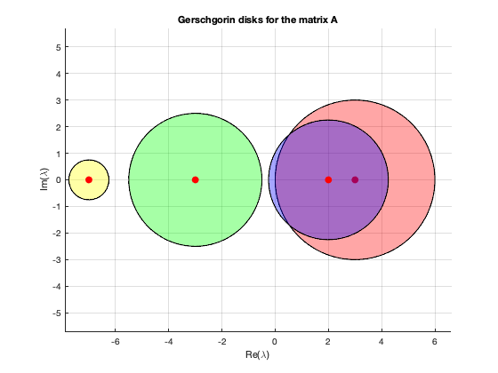

clc
close all
fprintf("Find regions in the complex plane where the eigenvalues are located.\n\n");
A = [3 -1 -1 1; -1 2 -1/4 1 ; -1 -1 -3 1/2 ...
;-1/2 -1/4 0 -7];
format long
c1 = A(1,1); c2 = A(2,2);
c3 = A(3,3); c4 = A(4,4);
r1 = 1 + 1+ 1; r2 = 1 + 1/4 +1;
r3 = 1 +1 + 1/2; r4 = 1/2 +1/4;
fprintf("The actual eigen values are:\n\n");
lam = eig(A)
fprintf("The matrix A has eigenvalues in the union of the Gerschgorin disks;\n")
fprintf("|lambda - 3|<3, \n|lambda - 2|<2.25, \n|lambda + 3|<2.5, \n|lambda + 7|<0.75, \n")
fprintf("So comparing the actual eigen values with the plot, its clear that two \n of the eigen values are located in the first two disks, and the \n remaining two in the union of the other two disks. \nThis is because the two disks are disjoint from the other 2.\n Hence from Gerschgorin’s theorem the results is verified. \n\n");
figure(1)
p = nsidedpoly(1000, 'Center', [c1 0], 'Radius', r1);
plot(p, 'FaceColor', 'r')
axis equal
grid on
hold on
plot(c1,0,'r.','MarkerSize',20)
hold on
p2 = nsidedpoly(1000, 'Center', [c2 0], 'Radius', r2);
plot(p2, 'FaceColor', 'b')
axis equal
hold on
plot(c2,0,'r.','MarkerSize',20)
hold on
p3 = nsidedpoly(1000, 'Center', [c3 0], 'Radius', r3);
plot(p3, 'FaceColor', 'g')
axis equal
hold on
plot(c3,0,'r.','MarkerSize',20)
hold on
p4 = nsidedpoly(1000, 'Center', [c4 0], 'Radius', r4);
plot(p4, 'FaceColor', 'y')
axis equal
hold on
plot(c4,0,'r.','MarkerSize',20)
xlabel("Re(\lambda)"); ylabel("Im(\lambda)");
title("Gerschgorin disks for the matrix A")
Find regions in the complex plane where the eigenvalues are located.
The actual eigen values are:
lam =
3.645698826149831
1.533195532698929
-3.279302662649521
-6.899591696199242
The matrix A has eigenvalues in the union of the Gerschgorin disks;
|lambda - 3|<3,
|lambda - 2|<2.25,
|lambda + 3|<2.5,
|lambda + 7|<0.75,
So comparing the actual eigen values with the plot, its clear that two
of the eigen values are located in the first two disks, and the
remaining two in the union of the other two disks.
This is because the two disks are disjoint from the other 2.
Hence from Gerschgorin’s theorem the results is verified.
